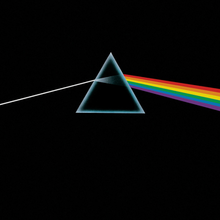

Meddle is the sixth studio album by English rock band Pink Floyd, released on 31 October 1971 by Harvest Records. The album was produced between the band's touring commitments, from January to August 1971 at a series of locations around London, including Abbey Road Studios and Morgan Studios. With no material to work with and no clear idea of the album's direction, the band devised a series of novel experiments which eventually inspired the album's signature track "Echoes". Although the band's later albums would be unified by a central theme with lyrics written entirely by Roger Waters, Meddle was a group effort with lyrical contributions from each member, and is considered a transitional album between the Syd Barrett-influenced group of the late 1960s and the emerging Pink Floyd. The cover has been explained by its creator Storm Thorgerson to be an ear underwater; as with several previous albums designed by Hipgnosis, though, Thorgerson was unhappy with the final result. The album was well-received by critics upon its release, and was commercially successful in the United Kingdom, but lacklustre publicity on the part of the band's American label Capitol Records led to poor sales there upon initial release.
-
1971: Meddle
- One of These Days
- A Pillow of Winds
- Fearless (including "You'll Never Walk Alone")
- San Tropez
- Seamus
- Echoes

-
1972: Obscured by Clouds
Obscured by Clouds is the seventh studio album by the English progressive rock band Pink Floyd, released on 2 June 1972 by Harvest and Capitol Records. It is based on their soundtrack for the French film La Vallée, by Barbet Schroeder. It was recorded in two sessions in France, while they were in the midst of touring, and produced by the band members. The album is shorter than some of their previous material, and makes heavy use of the acoustic guitar. Lyrically, the songs centre around love, a common theme in the film it was inspired by. The album's only single was "Free Four". Obscured by Clouds has been seen as a stopgap for the band, who had started work on their next album, The Dark Side of the Moon (1973). The work is often overlooked in the band canon, primarily because of the success of their later material. Nevertheless, the album reached number six in the UK and number 46 in the US, and retrospective opinions from both fans and critics have been positive, with some critics noting the similarities to their later material.
- Obscured by Clouds
- When You're In
- Burning Bridges
- The Gold Ot's in the..
- Wot's.. Uh the Deal?
- Mudmen
- Childhood's End
- Free Four
- Stay
- Absolutely Curtains

-
1973: The Dark Side of the Moon
The Dark Side of the Moon is the eighth studio album by English rock band Pink Floyd, released on 1 March 1973 by Harvest Records. Primarily developed during live performances, the band premiered an early version of the record several months before recording began. New material was recorded in two sessions in 1972 and 1973 at Abbey Road Studios in London. The record builds on ideas explored in Pink Floyd's earlier recordings and performances, while omitting the extended instrumentals that characterised their earlier work. A concept album, its themes explore conflict, greed, time, death, and mental illness, the latter partly inspired by the deteriorating health of founding member Syd Barrett, who departed the group in 1968. The group employed multitrack recording, tape loops, and analogue synthesisers. Snippets from interviews with the band's road crew, as well as philosophical quotations, were also used. Engineer Alan Parsons was responsible for many sonic aspects and the recruitment of singer Clare Torry, who appears on "The Great Gig in the Sky". The sleeve, which depicts a prism spectrum, was designed by Storm Thorgerson, following keyboardist Richard Wright's request for a "simple and bold" design, representing the band's lighting and the record's themes. The album was promoted with two singles: "Money" and "Us and Them".
The Dark Side of the Moon is among the most critically acclaimed records in history, often featuring on professional listings of the greatest albums. The record reached number one on the US Billboard Top LPs and Tape chart (now known as the Billboard 200), and has charted for 950 weeks in total. With estimated sales of over 45 million copies, it is Pink Floyd's best seller, and one of the best-selling albums worldwide. The record helped to propel Pink Floyd to international fame, bringing wealth and recognition to all four of its members. It has been remastered and re-released on several occasions, most recently for digital distribution.
- Speak to Me
- Breathe
- On the Run
- Time
- The Great Gig in the Sky
- Money
- Us and Them
- Any Colour You Like
- Brain Damage
- Eclipse

-
1975: Wish You Were Here
Wish You Were Here is the ninth studio album by the English rock band Pink Floyd, released on 12 September 1975 through Harvest Records and Columbia Records, their first release for the latter. Based on material Pink Floyd composed while performing in Europe, Wish You Were Here was recorded over numerous sessions throughout 1975 at Abbey Road Studios in London. The album's themes include criticism of the music business, alienation, and a tribute to founding member Syd Barrett, who left seven years earlier with deteriorating mental health. Like their previous record, The Dark Side of the Moon (1973), Pink Floyd used studio effects and synthesisers. Guest singers included Roy Harper, who provided the lead vocals on "Have a Cigar", and Venetta Fields, who added backing vocals to "Shine On You Crazy Diamond". To promote the album, the band released the double A-side single "Have a Cigar" / "Welcome to the Machine".
Wish You Were Here received mixed reviews from critics on its release, who found its music uninspiring and inferior to their previous work. It has retrospectively received critical acclaim, hailed as one of the greatest albums of all time, and was cited by keyboardist Richard Wright and guitarist David Gilmour as their favourite Pink Floyd album. It reached number one in the US and UK and Harvest's parent company, EMI, was unable to keep up with the demand. Since then, the record has sold an estimated 13 million copies.
- Shine On You Crazy Diamond (Parts 1 - 5)
- Welcome to the Machine
- Have a Cigar
- Wish You Were Here
- Shine On You Crazy Diamond (Parts 6 - 9)

-
1977: Animals
Animals is the tenth studio album by English rock band Pink Floyd, released on 23 January 1977 through Harvest and Columbia Records. It was recorded at the band's Britannia Row Studios in London throughout 1976, and was produced by the band. The album continues the longform compositions that made up their previous works, including Wish You Were Here (1975). The album received positive reviews from critics and was commercially successful, reaching number 2 in the UK and number 3 in the USA. Animals is both a progressive rock album and a concept album, focusing on the social-political conditions of mid-1970s Britain, and was a change from the style of their earlier work. Tension within the band during production later culminated in keyboardist Richard Wright leaving during the recording of The Wall (album). The album's cover shows an inflatable pig floating between two chimneys of the Battersea Power Station, conceived by the band's bassist and lead songwriter Roger Waters, and was designed by long-time collaborator Storm Thorgerson. The band released no singles from the record, but promoted it through the In the Flesh tour. Waters' agitation with the crowd during this tour inspired their next record, The Wall (1979).
- Pigs on the Wing (Part 1)
- Dogs
- Pigs (Three Different Ones)
- Sheep
- Pigs on the Wing (Part 2)